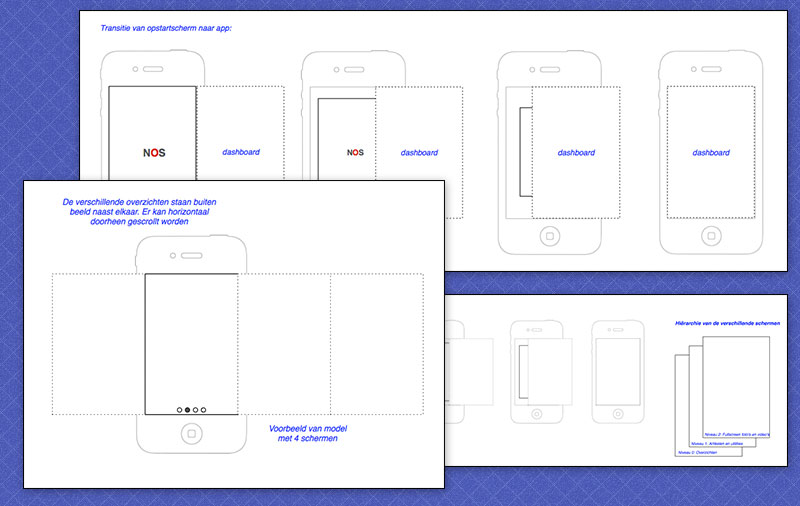
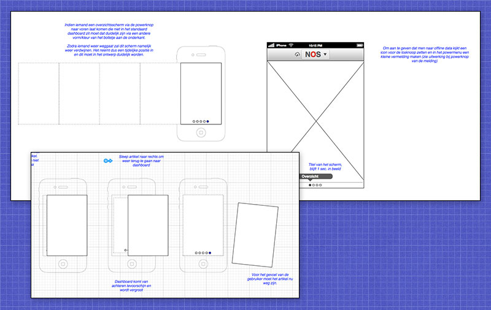
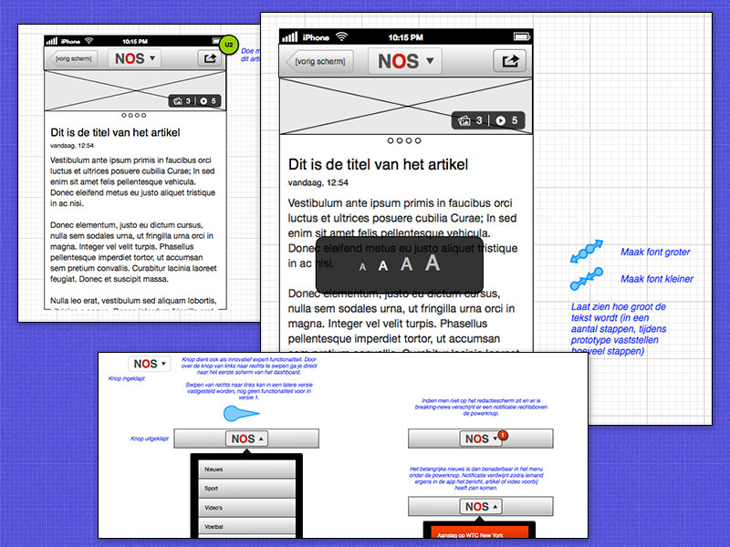

Met de NOS app is de eerste goede stap gezet om het NOS nieuws volledig native naar iOS, Android en Windows Phone te brengen. Tijdens het ontwerpproces is er gezocht naar een eigen ontwerptaal die hetzelfde gevoel moet overbrengen door alle platformen heen zonder dat de unieke eigenschappen van de systemen overboord hoeven te worden gegooid.
Er zitten een aantal unieke features in de app die je niet snel tegenkomt in andere apps en die de gebruikservaring ten goede komen. Dit is Apple ook opgevallen en heeft de app twee jaar achter elkaar (2012 en 2013) uitgekozen als enige Nederlandse app in het jaarlijkse rijtje "app juwelen". Apple had het volgende erover te melden: "Door de innovatieve interface en het slanke design is NOS ideaal om op de hoogte te blijven."
Ik was verantwoordelijk voor het interactie-ontwerp. Het grafisch ontwerp is verzorgd door Stylishmedia. Dit schreef de NOS er zelf over:
Download de app voor: iPhone / iPad, Android, Windows Phone
  
{% endblock %}